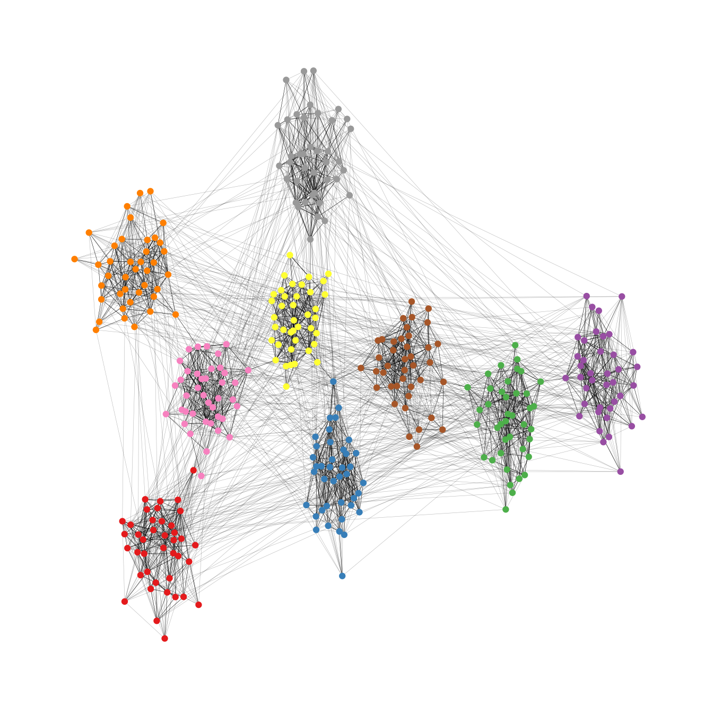

This package implements some graph layout algorithms that are not
available in igraph or other packages. This vignette only
introduces the basic functionality of the package and the most important
layout functions. A more in depth tutorial on network visualization in R
using graphlayouts which introduces its full functionality
can be found online.
Implemented layout algorithms
The package implements the following algorithms:
- Stress majorization (Paper)
- Quadrilateral backbone layout (Paper)
- flexible radial layouts (Paper)
- sparse stress (Paper)
- pivot MDS (Paper)
- dynamic layout for longitudinal data (Paper)
- spectral layouts (adjacency/Laplacian)
- a simple multilevel layout
- a layout algorithm using UMAP
- group based centrality and focus layouts which keeps groups of nodes close in the same range on the concentric circle
Stress layout for connected network
The “stress” layout is always a safe layout choice since it is deterministic and produces nice plots for almost any graph. It is recommended to use it as a default choice.
set.seed(666)
pa <- sample_pa(1000,1,1,directed = F)
ggraph(pa,layout = "stress")+
geom_edge_link0(width = 0.2,colour = "grey")+
geom_node_point(color = "black",size = 0.3)+
theme_graph()Stress layout for unconnected network
Stress majorization also works for networks with several components. It relies on a bin packing algorithm to efficiently put the components in a rectangle, rather than a circle.
set.seed(666)
g <- disjoint_union(
sample_pa(10,directed = F),
sample_pa(20,directed = F),
sample_pa(30,directed = F),
sample_pa(40,directed = F),
sample_pa(50,directed = F),
sample_pa(60,directed = F),
sample_pa(80,directed = F)
)
ggraph(g, layout = "stress",bbox = 40) +
geom_edge_link0() +
geom_node_point() +
theme_graph()Backbone layout
layout_as_backbone() is a layout algorithm that can help
emphasize hidden group structures. To illustrate the performance of the
algorithm, we create an artificial network with a subtle group structure
using sample_islands() from igraph.
The network consists of 9 groups with 40 vertices each. The density within each group is 0.4 and there are 15 edges running between each pair of groups. Using the recommended approach using the stress layout yields the following result.
set.seed(665)
#create network with a group structure
g <- sample_islands(9,40,0.4,15)
g <- simplify(g)
V(g)$grp <- as.character(rep(1:9,each=40))
ggraph(g,layout = "stress")+
geom_edge_link0(colour = rgb(0,0,0,0.5),width = 0.1)+
geom_node_point(aes(col = grp))+
scale_color_brewer(palette = "Set1")+
theme_graph()+
theme(legend.position = "none")As one can see, the graph seems to be a proper hairball without any special structural features standing out. In this case, though, we know that there should be 9 groups of vertices that are internally more densely connected than externally. To uncover this group structure, we turn to the backbone layout.
The backbone layout helps to uncover potential group structures based on edge embeddedness and puts more emphasis on this structure in the layout.
To use the function, you need to install the package
oaqc
install.packages("oaqc")
bb <- layout_as_backbone(g,keep=0.4)
E(g)$col <- F
E(g)$col[bb$backbone] <- T
ggraph(g,layout = "manual",x = bb$xy[,1],y = bb$xy[,2])+
geom_edge_link0(aes(color = col),width = 0.1)+
geom_node_point(aes(color = grp))+
scale_color_brewer(palette = "Set1")+
scale_edge_color_manual(values = c(rgb(0,0,0,0.3),rgb(0,0,0,1)))+
theme_graph()+
theme(legend.position = "none")
The groups are now clearly visible. Of course the network used in the example is specifically tailored to illustrate the power of the algorithm. Using the backbone layout in real world networks may not always result in such a clear division of groups. It should thus not be seen as a universal remedy for drawing hairball networks. Keep in mind: It can only emphasize a hidden group structure if it exists.
Radial layout with focal node
The function layout_with_focus() creates a radial layout
around a focal node. All nodes with the same distance from the focal
node are on the same circle.
karate <- make_graph("Zachary")
p1 <- ggraph(karate,layout = "focus",focus = 1) +
draw_circle(use = "focus",max.circle = 3)+
geom_edge_link0(edge_color="black",edge_width=0.3)+
geom_node_point(fill="grey25", size=2,shape=21)+
scale_fill_manual(values=c("#8B2323", "#EEAD0E"))+
theme_graph()+
theme(legend.position = "none")+
coord_fixed()+
labs(title= "Focus on Mr. Hi")
p2 <- ggraph(karate,layout = "focus",focus = 34) +
draw_circle(use = "focus",max.circle = 4)+
geom_edge_link0(edge_color="black",edge_width=0.3)+
geom_node_point(fill="grey25",size=2,shape=21)+
scale_fill_manual(values=c("#8B2323", "#EEAD0E"))+
theme_graph()+
theme(legend.position = "none")+
coord_fixed()+
labs(title= "Focus on John A.")
p1
p2Radial Centrality Layout
The function layout_with_centrality creates a radial
layout around the node with the highest centrality value. The further
outside a node is, the more peripheral it is.
bc <- betweenness(karate)
p1 <- ggraph(karate,layout = "centrality", centrality = bc, tseq = seq(0,1,0.15)) +
draw_circle(use = "cent") +
annotate_circle(bc,format="",pos="bottom") +
geom_edge_link0(edge_color="black",edge_width=0.3)+
geom_node_point(fill="grey25", size=2,shape=21)+
scale_fill_manual(values=c("#8B2323", "#EEAD0E"))+
theme_graph()+
theme(legend.position = "none")+
coord_fixed()+
labs(title="betweenness centrality")
cc <- closeness(karate)
p2 <- ggraph(karate,layout = "centrality", centrality = cc, tseq = seq(0,1,0.2)) +
draw_circle(use = "cent") +
annotate_circle(cc,format="scientific",pos="bottom") +
geom_edge_link0(edge_color="black",edge_width=0.3)+
geom_node_point(fill="grey25",size=2,shape=21)+
scale_fill_manual(values=c("#8B2323", "#EEAD0E"))+
theme_graph()+
theme(legend.position = "none")+
coord_fixed()+
labs(title="closeness centrality")
p1
p2Large graphs
graphlayouts implements two algorithms for visualizing
large networks (<100k nodes). layout_with_pmds() is
similar to layout_with_mds() but performs the
multidimensional scaling only with a small number of pivot nodes.
Usually, 50-100 are enough to obtain similar results to the full
MDS.
layout_with_sparse_stress() performs stress majorization
only with a small number of pivots (~50-100). The runtime performance is
inferior to pivotMDS but the quality is far superior.
Layout manipulation
The functions layout_mirror() and
layout_rotate() can be used to manipulate an existing
layout